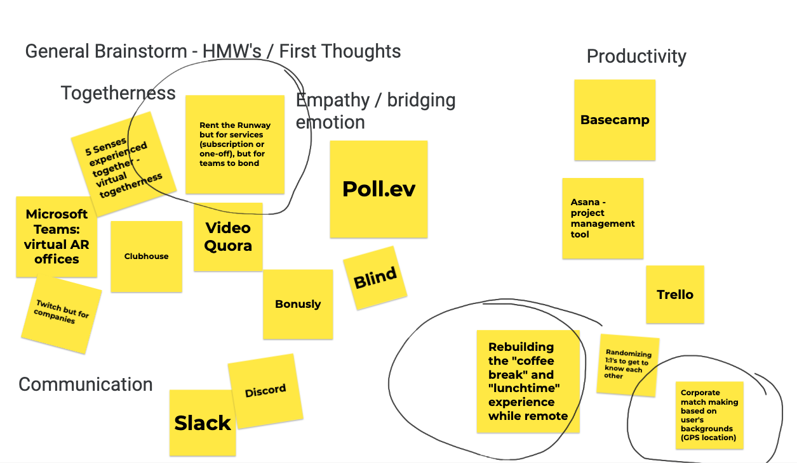
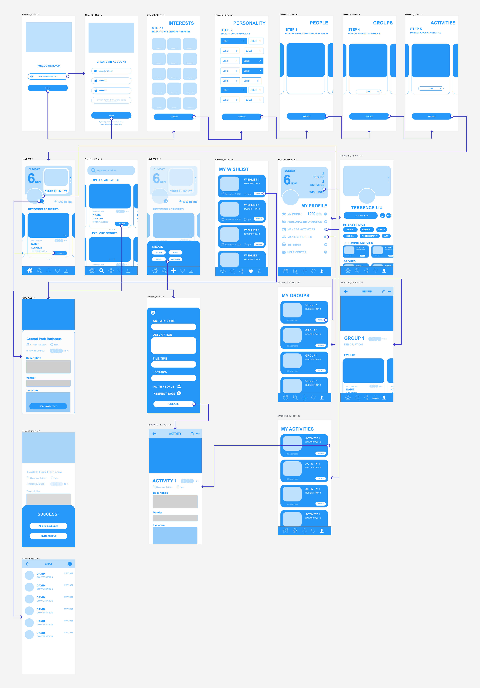

Bridgen
Project context
In Fall 2021, Business + Tech at the Ross School of Business at University of Michigan hosted their first ever Tech Innovation Jam, a 5-week program that s tarts with an idea and ends with a prototype. Teams of students across business and technical degrees are given a prompt and asked to create a digital product solution. This year's theme was staying connected through technology in a continuously changing world.
Project Goals
- Design a solution that embraces ambiguity and creates connections between different groups, within a community, or whatever you see fit.
- Present a working prototype of your product solution
- Propose a go-to-market plan, including roadmap to monetization and total economic and social impact.
Methodology
Phase 1 | Understanding the user
- Problem statement + concept brainstorming
- Personas
- Competitive analysis
Phase 2 | Product requirements & mock-ups
- Product requirements doc (PRD)
- Wireframes
- User testing
Phase 3 | Final prototype and business pitch
- Prototype demo
- Business pitch deck
My role
My team was comprised of x2 Ross MBA students and x3 School of Information Master's students. I played the role of project manager and lead researcher. I also co-authored the PRD and business pitch. Direct responsibilities included: Project management and project plan development, leading the brainstorming session, user testing, competitive analysis, market cap analysis
Phase 1: Understanding the user
Defining the problem space
Due to the compacted timeline of the event, the team decided to narrow our focus on professional and workplace community building. This allowed us to concentrate on a targeted audience facing similar issues. We defined this as SMB businesses that are managing hybrid (in-person and remote) workforces. The group believed this was an important issue to solve as more organizations shift toward hybrid work models, employees may increasingly feel disconnected from the company's goals, norms, and each other, resulting in an information divide. Increasing morale for productivity may be a factor, but deeper levels of resonance between managers, teams, and peers are also high factors for company retention, attrition, and external brand sentiments.
“I am an employee. I am trying to get to know my work team and environment but I don't know where to begin. The physical distance is taking away all the typical ways I usually get to know new people, like getting lunch, or casually chatting over a break. This makes me feel frustrated, disconnected, and ambivalent about my work and company.” — Problem Statement
Brainstorming
 Using Jamboard, the team brainstormed initial ideas. Two lists of categories (Creative stimulation + COVID activities) were presented to the group to stimulate imagination. Follo initial idea generation, the group came together to group ideas by category and identify the ones that resonated based on interest and feasibility.
The concept
The idea the team decided to pursue was a platform for teammates and managers to find personal interests/commonalities amongst one another such as hobbies, activism, and personal growth areas. The platform supports users in setting up events in which users may participate together virtually or in person. Managers will also be provided oversight to their teams' interests and trends in interpersonal connection. The team decided to name the product Bridgen.
Competitive analysis
There are many products in the market that support companies in building morale and recognition programs. Few of these products focus on experiential activities. Blueboard, the most well known company that offers experiential gifting, is geared toward large enterprise companies. Other companies focusing on team building activities are also more focused on a la carte offerings, rather than programmatic oversight.
Phase 2: Product requirements and mockups
Product requirements doc (PRD)
Business Goals
Under the hybrid working environment, managers find it hard to bond their teams, and team members feel disconnected with each other. Our product aims to address this problem by building a platform for managers and teammates to connect and interact with each other through shared experiences, building a close, dynamic and efficient team.
Product Purpose/Value Proposition
The product provides a platform for teammates and managers to find personal interests/commonalities amongst one another such as hobbies, activism, and personal growth areas. The platform supports users in setting up events in which users may participate together virtually or in person. These activities may be user generated or purchased via a points system using allocated team budget and approved company vendors. This platform supports employees in bridging the social disconnect that results from working in dispersed workforces through shared experiences.
Target Audience Profile(s)
Our target users are managers leading teams of 5-20 individuals who are struggling to bond the team under the hybrid working environment, and team members who feel disconnected with people they're closely working with.
Desired User Outcomes
We hope that users could have team building activities and get the shared experience on the platform in a 1 on 1 or group settings. We hope managers will use this to generate meaningful relationships with their team members in a setting outside of the typical team meeting.
Metrics of Success
We will define success metrics for this new app through monetization and engagement KPIs.
Potential Risks / Negative Impacts
With this new product, managers may be concerned that workforce productivity may go down since time will be spent using this application instead of working. While this may impact productivity in the short run, studies show that team cohesion is a major contributor to long-term team success. Additionally, there is concern that creating a product of this scale may take development resources away from other projects. Given the initial MVP launch is only five weeks in duration, we do not anticipate this to be an issue.
Minimum Viable Product (MVP) Outline
For the purposes of this project, the team will focus on designing the employee facing prototype, with early wireframes of the manager platform. If the project is pursued in the future, the team will complete further work for functions important to program administrators.
Wireframes + Low-fi prototypes
User testing
Using the low-fi prototype, I carried out user testing with x3 participants - all work in SMB tech companies, and all are involved in team engagement as managers or program owners. The feedback from these sessions are below.
Concept enthusiasm
All participants expressed interest in the platform's support in event planning, especially in identifying company-approved vendors. While the people managers interviewed described usability in team management, one interviewee also mentioned potential use cases in running an intern program with hybrid workforce. Less enthusiasm was expressed in brainstormed “manager dashboard” functions, such as user interest profiles and analytics. The interviewed people managers expressed that insights such as a direct report's personal hobbies may be gathered through 1:1's.
Mark a hard line between professional and social app interactions
Certain components of the low-fi prototype reminded interviewees too much of dating applications (swipe left/right to follow people, multiple profile pictures). Interviewees expressed discomfort with some of the terminology (Follow vs Connect), remarking that it felt out of place in a professional setting.
“I'm not sure I want to follow a colleague? Is this social media? ... As a manager, having my team members follow each other could lead to a weird power dynamic, like a popularity contest.” — Interviewee 1
Chat is a nice to have
While a chat function was mocked in the low-fi prototype (in the case users want to communicate with other employees attending an event), interviewees wondered when it would be used over the company&aposls existing chat tools, such as Slack.
Phase 3: Final prototype and business pitch
Final prototype